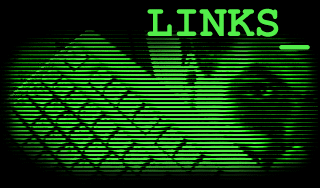

|

|
If you like what I'm doing with TEXTFILES.COM, then there is a good chance
you might like some of these suggested sites and additional reading that
I consider worth your time. I'm not the only one working to capture an era.
|
Suggested Other Sites...
John
Stevenson's Hacker/Culture page is incredible, a real amazing
approach to talking about his times with computers in the 1980's and
1990's. From his clever browser tricks to his insisting on bringing
you as deep into his experience as possible, this site really takes
advantage of today's technology to tell you about yesterday. Plus,
he has direct capture screens of BBSes from his first logins,
something most people have long lost or deleted. And he's a
great writer, too. We're on divergent paths and approaches, but
his shines brightly.
Nomadic Research Labs is the home
of Steven K. Roberts, who was the original Techno-Nomad. When I was sneaking
onto Compuserve in my teens, I would find these incredible stories of a man
pedaling a bike across the country and writing on his laptop about all the
wonderful things he'd run into. It was truly inspiring. In fact, a collection
of some of these stories is on this archive. But if you want to do yourself
a favor, stop by his site and read about him and pick up a copy of
his book,
which chronicles his first
incredible journey across America. It's a wonderful story to read and if
you want a book on your shelf that really captures that Technology and
Wonder and the Reality of Life feeling that textfiles might give you, this
is the book.
The Nifty Erotic Stories Archive contains
over 9,700 erotic stories of all types and persuasions, many of which were
saved off of BBSs of the 1980's. It is very likely I have a few of these
stories myself, but they have many, many more.
Acheron.org is a very well-maintained
news and file archive, dedicated to of all things ANSI artwork (Packs)
Graphics (Hi-rez) and new stories and textfiles (Lit), showing that the
culture of creating new and interesting takes using technology is very much
alive and well, and worth seeing.
The Official 5.25" Disk
Sleeve Archive is a awe-inspiring collection of the unique and interesting
paper sleeves that would house 5 1/4" floppy disks for the vast majority of
home computers of the 80's. While one might recall that non-commercial disks
all came in plain sleeves, looking over this archive will change that notion
immediately. If you lived and used computers through that time, this archive
brings back memory after memory. Fantastic.
Suggested Reading...
Please note: My links lead to the online bookseller
amazon.com because I happen to like them
and am a big customer of theirs. I don't get money for linking to them and
you are encouraged to purchase these books via any means you want, or to go
to your local library and read them.
The Hacker
Crackdown by Bruce Sterling is one of the few books written that comes
close to portraying the many cultural forces that led to the BBS world of
the 1980's. He gives a great feeling for the stories behind the events, and
I think he really captures the moods that I feel when I look back at this
time. This book is available for free on the Internet (and possibly even
my site) but it's a great book to have on your shelf anyway.
Good Friends
ROTTEN.COM is run by one of the
SysOps of the Dark Side of the Moon and contains some of the most graphic,
shocking, over-the-top imagery available on the Internet. Our intended
audiences probably don't overlap all that much, but if you decide you
need some pictures you'll never forget, this is the site for you.
This section will be growing. Send mail to
jason if you can suggest further
sites for him to browse and books to read.
| |